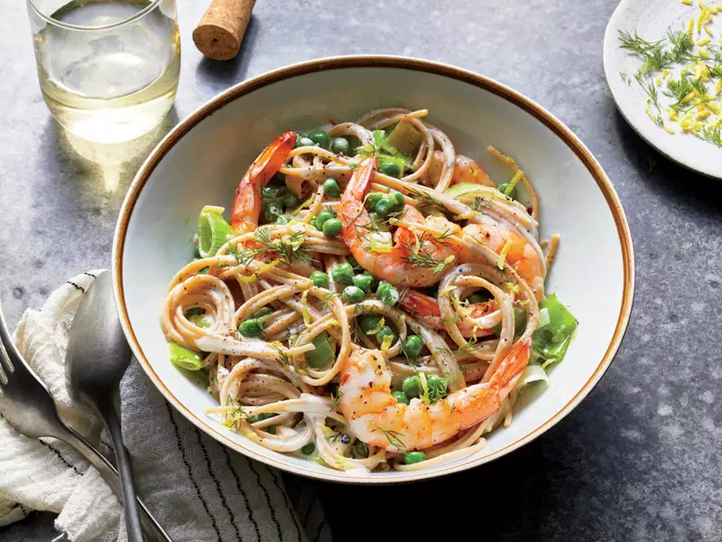

Shrimp and Leek Spaghetti

Description
Frozen peas and peeled shrimp make this meal a quick-fix. The sauce comes
together easily for an oniony, creamy, and bright lemon flavor combining
to bring you 28g of protein.
Ingredients
- 8 ounces uncooked whole-grain spaghetti
- 1 pound peeled, deveined raw medium shrimp
- 1/2 teaspoon black pepper
- 3/4 teaspoon kosher salt, divided
- 1 1/2 tablespoons olive oil, divided
- 2 cups chopped leek (from 1 large leek)
- 1 tablespoon chopped garlic (from 3 garlic cloves)
- 2 cups frozen baby sweet peas (about 9 oz.), thawed
- 1/4 cup heavy cream
- 2 teaspoons lemon zest
- 2 tablespoons fresh lemon juice
- 2 tablespoons chopped fresh dill
Steps
-
Step 1
Cook pasta according to package directions, omitting salt and fat.
Drain, reserving 1/2 cup cooking liquid. Cover pasta to keep warm.
-
Step 2
While pasta cooks, pat shrimp dry with paper towels; season with pepper
and 1/4 teaspoon salt. Heat half of the olive oil in a large nonstick
skillet over high. Add shrimp; cook, stirring often, until cooked
through, 3 to 4 minutes. Transfer to a plate; cover to keep warm. (Do
not wipe skillet clean.)
-
Step 3
Reduce heat to medium-high. Add leek, garlic, remaining oil, and
remaining 1/2 teaspoon salt. Cook, stirring often, until leek is
slightly tender, 2 to 3 minutes. Add peas, cream, lemon zest, lemon
juice, and reserved 1/2 cup cooking liquid. Reduce heat to medium;
simmer until sauce thickens slightly, 2 to 3 minutes. Add shrimp to
skillet; toss to coat.
-
Step 4
Divide pasta among 4 bowls; top evenly with shrimp and sauce. Sprinkle
with dill, and serve immediately.